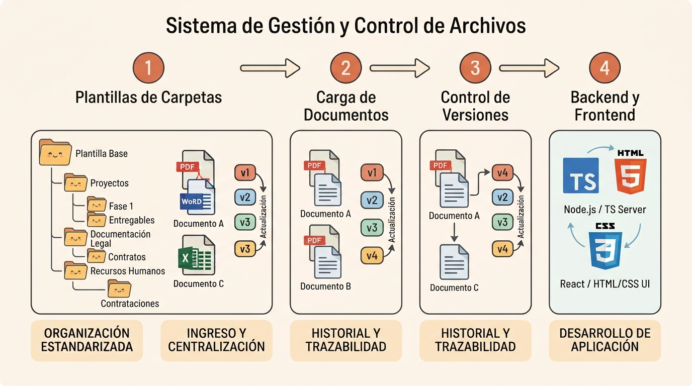

Plantillas jerárquicas
Diseño y reutilización de estructuras predefinidas de carpetas y subcarpetas para nuevos proyectos o áreas.
Estandarización, versionado y gobernanza documental conectados con la inteligencia de la organización.

Plataforma web integral diseñada para estandarizar, versionar y gobernar archivos corporativos mediante plantillas de carpetas jerárquicas. Está conectada directamente con un Grafo de Conocimiento para mantener actualizada la base de inteligencia artificial de la organización en tiempo real.
Cuando múltiples equipos gestionan documentos sin una estructura estándar, surgen problemas críticos de organización y confiabilidad de los datos.
Diseño y reutilización de estructuras predefinidas de carpetas y subcarpetas para nuevos proyectos o áreas.
Historial de actualizaciones de cada documento, trazabilidad de cambios y prevención de sobrescrituras accidentales.
Validación y aprobación de estructuras creadas antes de su uso oficial para garantizar la gobernanza documental.
La carga o actualización de un archivo activa su ingesta automática en el pipeline GraphRAG y Neo4j.
Aplicación web desacoplada con frontend interactivo y backend robusto para gestionar archivos, metadatos, reglas de negocio e integraciones externas. El backend comunica cada operación confirmada con el motor de ingesta del Grafo de Conocimiento.